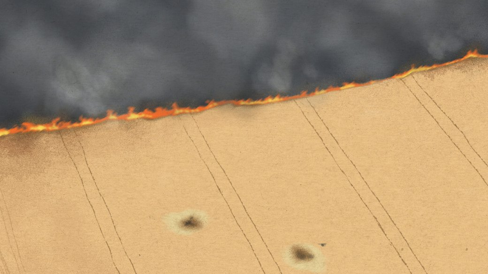
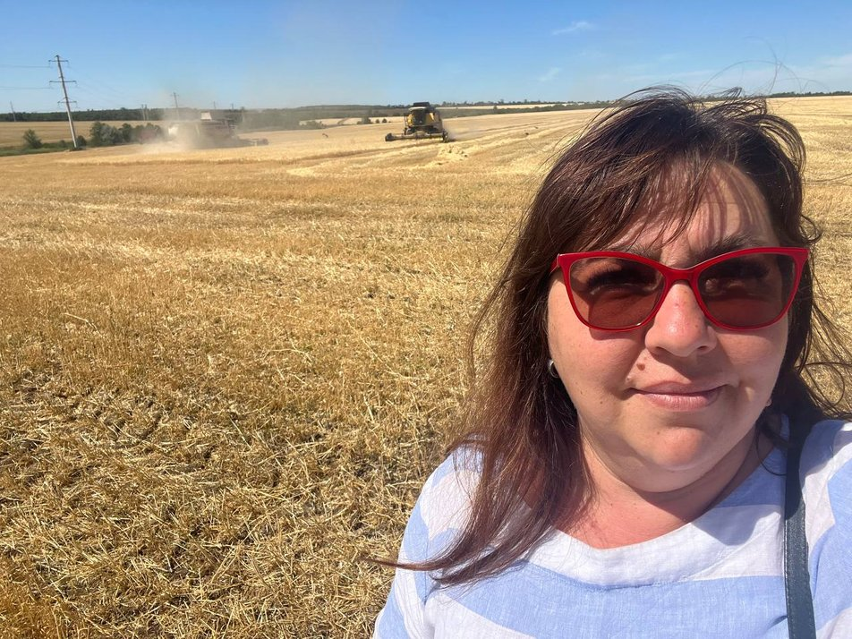
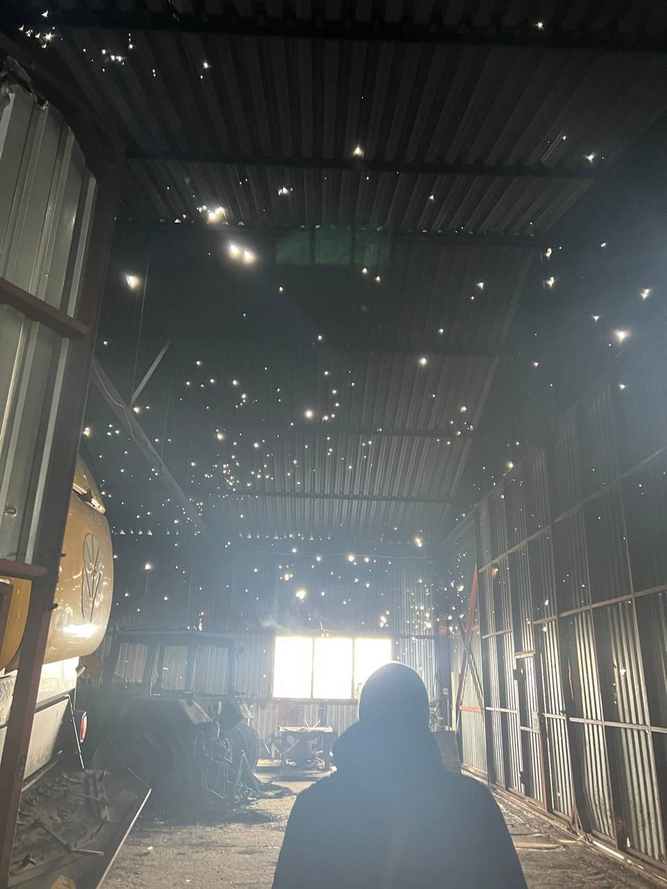
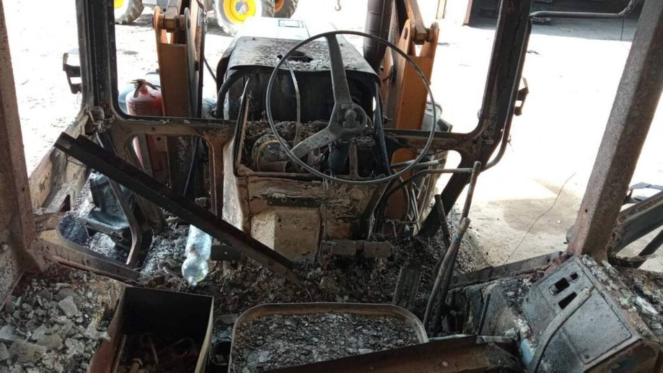
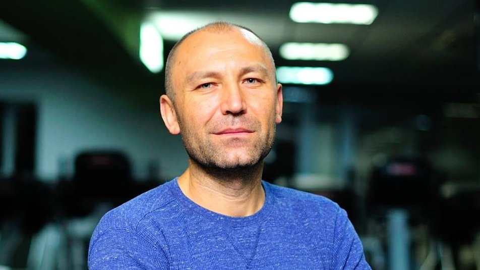

Світу загрожує "найсильніший голод з часів Другої світової війни". До чого тут Росія і чому це зачепить усіх

24 лютого 2022-го Росія розпочала повномасштабне вторгнення на територію України.
А вже за місяць — на початку квітня — Продовольча та сільськогосподарська організація ООН підрахувала,
що світові ціни на їжу побили рекорд: лише за місяць зросли на 33,6%. Таку динаміку цін організація
пов’язала з потрясіннями на ринках рослинних олій та зернових через війну в Україні, зокрема через
блокування Росією українських портів. Публікуємо матеріал проєкту "War. Stories from Ukraine".
У 2019-2021 роках на Україну припадало майже 10% світового експорту пшениці, 15%
експорту кукурудзи, 15% експорту ячменю та майже 50% експорту соняшникової олії. Низка країн, особливо
на близькому Сході та в Африці, критично залежать від імпорту цих продуктів. Кількамісячне блокування
Росією морських портів України, через які йшло 90% експорту зернових, вже має наслідки як для
глобального ринку, так і для конкретних людей, які потерпають від голоду.
"Президент Путін заблокував відправки продовольства та агресивно використовує
свою пропагандистську машину, щоби відмежуватися від відповідальності або викривити її, бо
сподівається, що світ поступиться йому та скасує санкції. Іншими словами, це просто шантаж", — заявив
держсекретар США Ентоні Блінкен. Він наголосив, що Росія серйозно погіршує ситуацію з голодом за
межами українських кордонів, зокрема в країнах Африки.
За словами Генерального секретаря ООН Антоніу Гутерріша, війна в Україні
загрожує голодом і бідністю для 1,7 мільярда людей, що становить 20% населення світу. А за прогнозами
EurasiaGroup вже до листопада 2022 року близько 1,9 мільярда людей стикнуться з проблемами
продовольчої безпеки. Це може викликати бунти та протести в найбідніших країнах, потік біженців з
Африки та Азії до Європи, а також масову голодну смерть людей, переважно в країнах Африки.
Посуха, пандемія коронавірусу та російська війна в Україні можуть призвести до
"найсильнішого з часів Другої світової війни" голоду у світі, заявила міністерка з питань економічного
співробітництва та розвитку Німеччини Свенья Шульце.
Росія використовує продовольчу кризу як зброю для тиску на світову спільноту.
Вона блокує та обстрілює українські порти, нищить українські зерносховища, спалює збіжжя на
українських полях, вивозить на свою територію врожаї та сільськогосподарську техніку з окупованих
територій, бомбить продовольчі склади та нафтобази по всій Україні, мінує сільськогосподарські угіддя.
Але навіть у таких умовах Україна змогла провести спочатку посівну, а потім і жнива.
22 червня Україна під егідою генсека ООН підписала з Туреччиною так звану
"зернову угоду" — про відновлення експорту морськими шляхами. Дзеркальний договір із Туреччиною і
Гутеррішем підписала й Росія. Але вже наступного дня росіяни атакували Одеський морський торговельний
порт крилатими ракетами типу "Калібр". Попри це 1 серпня перше українське судно з зерном вийшло з
одеського порту. Загалом за 20 днів зернової угоди з українських портів вийшло 27 суден, а 40 подали
заявки на захід. Утім, немає гарантій, що Росія не обстрілюватиме порти й елеватори.
"Я вже нічого не боюся"
Навесні лінія фронту підійшла впритул до полів миколаївського агропідприємства "Золотий колос". Земля, що належить підприємству, була всіяна вирвами від снарядів, а також мінами та снарядами, що не розірвалися. В ангар підприємства поцілили російські ракети — постраждала вся техніка. Зерносховище посічене уламками. Адміністративна будівля розграбована росіянами. "Але працюємо далі. Що ж нам лишається?", — говорить директорка агропідприємства Надія Іванова.
"Спочатку був шок, — згадує вона. — Ми не розуміли, що робити і куди бігти. У ніч на 24 лютого були сильні обстріли, але вранці всі вийшли на роботу. Встигли попрацювати до обіду, як почалися повітряні тривоги — і я відпустила людей по домах". Розповідає, що перші тижні підприємство допомагало військовим. Зокрема, їхня техніка копала окопи та облаштовувала блокпости. "Звісно, в цей час ми не могли працювати в полі, — говорить Надія Іванова. — Багатьом було страшно. Лінія фронту пролягала впритул до наших полів. Насіннєвий урожай ми зібрали пізніше, ніж мали". Агрокомплекс працює з 2003 року і обробляє чотири тисячі гектарів. Спеціалізується на вирощуванні насіння. "Крім традиційних озимих, пшениці, ріпака, соняшника, вирощуємо кормові трави — горох, гірчицю, люцерну, просо, нішеві культури — коріандр, льон тощо, — розповідає Надія Іванова. — На підприємстві працюють 78 людей. Ніхто не виїхав і не звільнився навіть попри обстріли й загалом нестабільну ситуацію у регіоні. Цього року нам, попри все, вдалося засіяти 3300 гектарів з 4000". Надія Іванова згадує, як тривали щільні обстріли. "7 березня масовано обстріляли наш зернотік, декілька ракет влучило в ангар, кілька тракторів згоріло повністю, інші трактори й комбайни були постріляні: жодного цілого скла, жодного цілого колеса, — розповідає директорка агропідприємства. — Коли лінію фронту наші військові трохи посунули, ми почали з відновлення того, що можна було відновити, щоб вийти в поле. Потім був цікавий квест — прибрати з полів все, що розірвалося чи не розірвалося. Ми чули новини про те, як фермери й механізатори підривалися за 10-15 кілометрів від наших полів. Усім було страшно. Ми намагалися максимально почистити наші поля — і це був тривалий процес: підчистили одне — пішли туди працювати, потім там само наступні".
Полагодити техніку швидко не вдавалося. У Миколаєві позакривалися магазини, знайти й купити запчастини було неможливо. Перевізники та пошта теж не працювали. "Ще був колапс із дизельним паливом, — згадує директорка підприємства. — Зараз ситуація з паливом більш-менш стабілізувалася, тільки ціна виросла вдвічі, а то й більше". Урожай цього року зібрали гірший, ніж сподівалися, говорить Надія Іванова. "Рослини не вдалося підживити, якась частина площі не оприскана, плюс посуха, тому я загалом розуміла, що гарного врожаю чекати не варто. Ще в селі Баштанка горіли наші поля… Тож маємо, що маємо. Переживемо", — говорить вона. Про плани керівниця говорить з обережністю. Повномасштабне вторгнення Росії в Україну відкинуло підприємство на кілька років назад, а всі ідеї стали залежні від воєнної ситуації в регіоні.
"Спочатку я планувала зберегти колектив і виплачувати вчасно зарплати. Потім — купити всі необхідні запчастини, розчистити поля від снарядів, знайти паливо. Потім перейти рубіж — спочатку посівна, потім збирання врожаю. Цей рубіж ми вже перетнули. Що буде з реалізацією — не знаю. Сьогодні купівельна спроможність українського аграрія дуже низька, — пояснює. — Ми багато працювали з тваринниками з Херсонщини, але вона зараз окупована. Багато хто поскорочував поголів’я. Поки що пливемо за течією, бо незрозуміло, що буде завтра. Але працюємо. От пройшов дощик — і висіяли ріпак. Вірю в ЗСУ — і планую сіяти озиму". На запитання, чого зараз боїться найбільше, Надія Іванова заходиться сміхом. "Я вже нічого не боюся", — каже. І згадує, як в перші два місяці повномасштабної війни їхнє підприємство цілодобово робило крупи і роздавало людям у селах, куди не доїжджали навіть волонтери. "Частину круп ми міняли на борошно, овочі, олію. Формували продуктові набори й возили в ті села, що були під обстрілами, куди не ходили маршрутки. За перші два місяці роздали понад 120 тонн своїх круп. Разом із водієм їздили туди газелькою. Я ловила себе на думці, що колись жвава траса зараз геть порожня — жодної машини. Чи було мені страшно? Ні. Чи страшно зараз? Ні. Нам своє робити", — підсумовує вона.
"Бідні країни просто лишаються без доступу до базових продуктів"
Найбільшою проблемою зараз є заблокована експортна логістика, від якої залежить доля агросектору України, а відтак і доля глобального ринку, каже аналітик Андрій Ярмак, який має 30-річний досвід аналізу глобальних агроринків. "Головна загроза зараз — неможливість відтворити виробництво в новому циклі або в новому сезоні. Посівна почнеться вже у вересні, і ми можемо побачити кардинальне зниження площ під озимою пшеницею. А якщо до весни Україна не буде зачищена від загарбників, то й під інші культури площі теж будуть зменшені. Тоді ринок орієнтуватиметься переважно на задоволення внутрішніх потреб, а не на експорт, як це було раніше. Україна може практично зникнути з карти світових експортерів. І це проблема для світового ринку". Ще навесні Андрій Ярмак описав спрощену схему, як саме російська війна в Україні загрожує світові голодом. А ще — чому продовольча криза зачепить не лише бідні верстви населення, а й середній клас та заможних людей.
"Україна значно більше експортує кормів, ніж продовольчого зерна. Корми — це №1 нашого агроекспорту — кукурудза, шроти олійних культур, соя, яка є найважливішим джерелом рослинного білка для тваринництва, — пояснює експерт. — А тваринництво — це галузь, що має досить тривалі цикли виробництва. І якщо дефіцит пшениці внаслідок припинення експорту її з України всі почали відчувати майже миттєво, то наслідки припинення експорту кормів країни починають відчувати поступово. Уже найменш ефективні виробники в країнах Близького Сходу, Північної Африки та Азії почали скорочувати поголів’я. Тобто різкий стрибок вартості кормів призводить до стрімкого зменшення поголів’я там, де виробництво миттєво стає збитковим, після чого ціни на м'ясо зростають в рази. На мій погляд, наприкінці 2022 року деякі країни побачать космічні ціни на м'ясо". Андрій Ярмак додає: якщо дефіцит зерна і зростання ціни на хліб викликає невдоволення бідного населення, то дороге м'ясо дратує середній клас та багатих людей. "І якщо невдоволеними є і бідні верстви населення, і середній клас, то маємо ідеальні умови для проблем. Тому у вересні-жовтні 2022-го ми вже можемо зіткнутися з новою хвилею революцій та локальних воєн у регіонах, які є традиційними ринками збуту української агропродукції. Війни в тому регіоні — це стрімке зменшення доходів для всіх, зокрема і для багатих країн, таких як країни ЄС та США, — пояснює аграрний експерт. — Україна — це найбільший експортер саме протеїнових кормів у всьому регіоні. Інші експортери дуже далеко: США, Аргентина, Бразилія. І замінити Україну на цьому ринку неможливо в принципі".
Андрій Ярмак наголошує: "Якщо прибрати з глобального ринку найбільшого регіонального гравця, яким є Україна, і якого неможливо замінити навіть протягом п’яти років, то зростання цін буде циклічним і довготривалим. І за такого цінового зростання бідні країни просто опиняються без доступу до базових продуктів, причому поступово: спочатку хліб і олія, потім продукти харчування, що виробляються з зерна та рослинних олій, потім молоко, яйця, а потім м'ясо і риба".